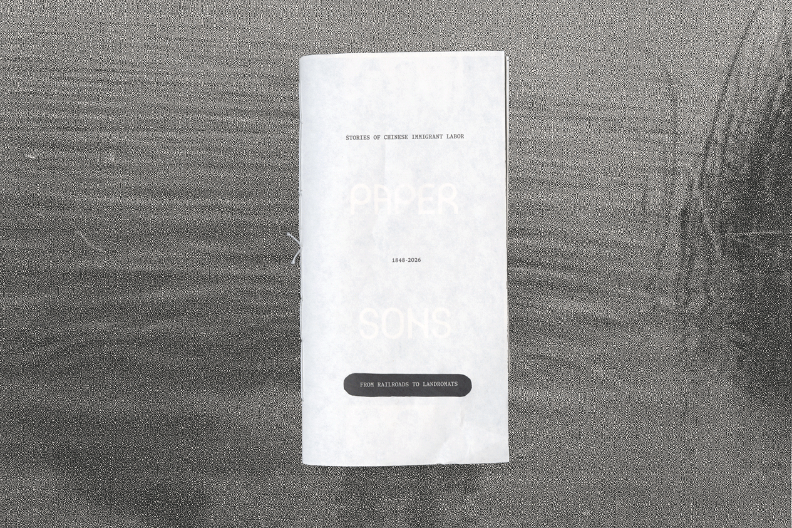

(designer)
CROSSTIE
(publication, typeface)

- → Download CROSSTIE
CROSSTIE is a display typeface inspired by the forms made by railroads from above, and the history of labor surrounding their construction. Conceptualized in Western Washington, where the train can be heard in all directions, it confronts the history violent of expulsion faced by the Chinese immigrants who built them. It's modern construction commentates on our experience of time, exploring how an immigration act passed in 1848 is felt by immigrants in 2026. The typeface was created in Glyphs Mini, it features a full upper & lowercase character set, numbers, and built out punctuation.
Type in Use
The type-specimen's for this typeface include a publication and poster. Based on my own family's history as Chinese immigrants, and an exploration of the labor they engaged in, it pulls from an archive of family photos dating from roughly the early to mid 1900s.


